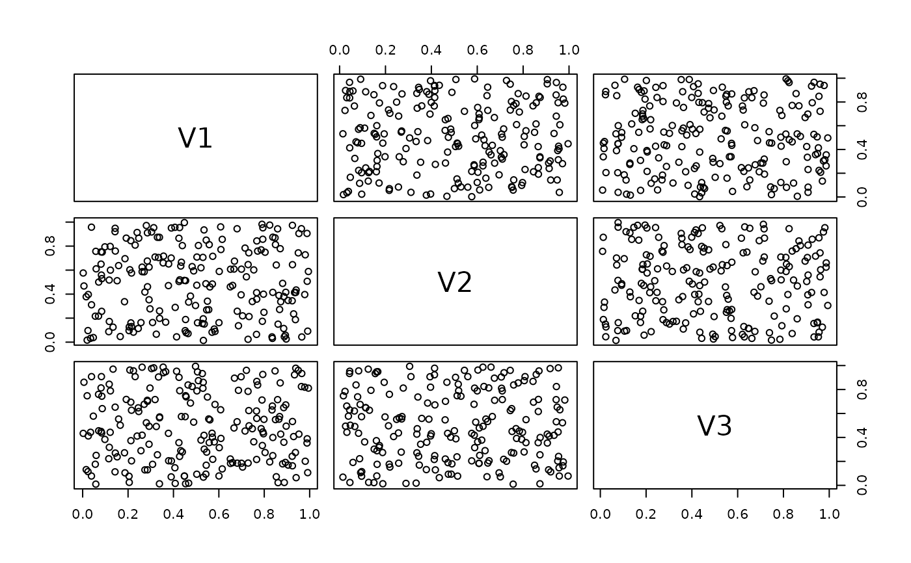
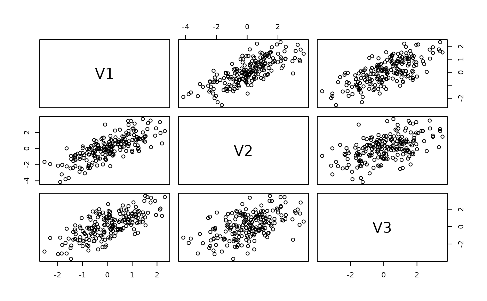

The Rosenblatt transform maps observations from a model to independent uniform variates. The inverse transform evaluates conditional quantiles and maps independent uniforms to draws from the model; see Details.
Usage
rosenblatt(
x,
model,
cores = 1,
randomize_discrete = TRUE,
conditioning_set = NULL
)
inverse_rosenblatt(u, model, cores = 1, conditioning_set = NULL)Arguments
- x
matrix of evaluation points; must be in \((0, 1)^d\) for copula models.
- model
a model object; classes currently supported are
bicop_dist(),vinecop_dist(), andvine_dist().- cores
if
>1, computation is parallelized overcoresbatches (rows ofu).- randomize_discrete
Whether to randomize the transform for discrete variables; see Details.
- conditioning_set
optional variable indices or names that define the conditioning variables. The transform uses an admissible sampling order whose tail contains exactly this set. The model is not modified. If
NULL, the current model order is used. An error is thrown if the requested set cannot form an admissible tail.- u
matrix of evaluation points; must be in \((0, 1)^d\).
Details
Let \((s_1, \ldots, s_d)\) be the sampling order of a random vector \(V = (V_1, \ldots, V_d)\) with distribution \(F\). For continuous variables, the Rosenblatt transform \(Z = T(V)\) is defined by $$ Z_{s_1} = F_{s_1}(V_{s_1}), \qquad Z_{s_j} = F_{s_j \mid s_1, \ldots, s_{j-1}} (V_{s_j} \mid V_{s_1}, \ldots, V_{s_{j-1}}), \quad j = 2, \ldots, d. $$ If the model is correct, the components of \(Z\) are independent standard uniforms. The result is stored in the original variable columns; the sampling order determines only the sequence of conditional distributions.
The inverse transform applies the corresponding conditional quantiles: $$ V_{s_1} = F_{s_1}^{-1}(Z_{s_1}), \qquad V_{s_j} = F_{s_j \mid s_1, \ldots, s_{j-1}}^{-1} (Z_{s_j} \mid V_{s_1}, \ldots, V_{s_{j-1}}), \quad j = 2, \ldots, d. $$ Thus \(T^{-1}(Z)\) has distribution \(F\) when \(Z\) contains independent standard uniforms.
If a variable has atoms, its conditional cdf jumps at the observation. Let
\(G_j\) denote the conditional cdf of \(V_{s_j}\) given the preceding
variables in the sampling order. Following Brockwell
(10.1016/j.spl.2007.02.008), rosenblatt() returns
$$
Z_{s_j} = W_j G_j(V_{s_j}) + (1 - W_j) G_j(V_{s_j}^{-}),
$$
where \(G_j(V_{s_j}^{-})\) is the left limit and the \(W_j\) are
independent standard uniforms. This randomization is used by default and
yields uniform components under the fitted model. Set
randomize_discrete = FALSE to return the upper endpoint
\(G_j(V_{s_j})\) instead.
Examples
# simulate data with some dependence
x <- replicate(3, rnorm(200))
x[, 2:3] <- x[, 2:3] + x[, 1]
pairs(x)
# estimate a vine distribution model
fit <- vine(x, copula_controls = list(family_set = "par"))
# transform into independent uniforms
u <- rosenblatt(x, fit)
pairs(u)

# inversion
pairs(inverse_rosenblatt(u, fit))

# works similarly for vinecop models
vc <- fit$copula
rosenblatt(pseudo_obs(x), vc)
#> V1 V2 V3
#> [1,] 0.547263682 0.93540911 0.42341648
#> [2,] 0.626865672 0.95228911 0.57625521
#> [3,] 0.646766169 0.60551214 0.16744677
#> [4,] 0.104477612 0.70503219 0.59024942
#> [5,] 0.791044776 0.26593680 0.54643862
#> [6,] 0.482587065 0.35312349 0.66279788
#> [7,] 0.711442786 0.69368626 0.20369865
#> [8,] 0.885572139 0.04300066 0.02609784
#> [9,] 0.099502488 0.49378303 0.70797373
#> [10,] 0.402985075 0.06388413 0.95960296
#> [11,] 0.860696517 0.76592423 0.86834422
#> [12,] 0.527363184 0.15017726 0.93810864
#> [13,] 0.825870647 0.87863259 0.94706969
#> [14,] 0.517412935 0.78560852 0.86111771
#> [15,] 0.736318408 0.07300224 0.64672588
#> [16,] 0.258706468 0.58783665 0.42456597
#> [17,] 0.174129353 0.34126374 0.31541453
#> [18,] 0.159203980 0.48836928 0.21686572
#> [19,] 0.656716418 0.62692672 0.47340741
#> [20,] 0.930348259 0.44088027 0.90314113
#> [21,] 0.771144279 0.20919455 0.33983686
#> [22,] 0.442786070 0.99361959 0.08552073
#> [23,] 0.194029851 0.13920471 0.03710196
#> [24,] 0.323383085 0.67694796 0.72294773
#> [25,] 0.114427861 0.09468151 0.22702671
#> [26,] 0.069651741 0.22362702 0.75669512
#> [27,] 0.308457711 0.92100294 0.97510725
#> [28,] 0.199004975 0.60212402 0.96285596
#> [29,] 0.328358209 0.08586086 0.48470851
#> [30,] 0.577114428 0.22573412 0.51177289
#> [31,] 0.805970149 0.04947469 0.67116131
#> [32,] 0.537313433 0.18431536 0.83876146
#> [33,] 0.024875622 0.11210525 0.16810402
#> [34,] 0.368159204 0.16634964 0.95144278
#> [35,] 0.631840796 0.74429710 0.38206801
#> [36,] 0.134328358 0.56646163 0.77785384
#> [37,] 0.601990050 0.66020495 0.18204425
#> [38,] 0.472636816 0.06280176 0.81708317
#> [39,] 0.845771144 0.16399947 0.02543090
#> [40,] 0.144278607 0.92298128 0.11498457
#> [41,] 0.970149254 0.43906988 0.78748358
#> [42,] 0.263681592 0.59829575 0.69725276
#> [43,] 0.636815920 0.84219754 0.12808592
#> [44,] 0.965174129 0.04446008 0.86540708
#> [45,] 0.900497512 0.02333195 0.49326565
#> [46,] 0.253731343 0.63324518 0.98874545
#> [47,] 0.358208955 0.62999655 0.99201885
#> [48,] 0.557213930 0.47839190 0.09830445
#> [49,] 0.592039801 0.06379239 0.43460503
#> [50,] 0.492537313 0.60896935 0.54525089
#> [51,] 0.875621891 0.12433872 0.67556096
#> [52,] 0.139303483 0.09445680 0.95955730
#> [53,] 0.751243781 0.84105329 0.91158915
#> [54,] 0.288557214 0.43618669 0.69635603
#> [55,] 0.960199005 0.94800549 0.77115318
#> [56,] 0.810945274 0.03440528 0.70379948
#> [57,] 0.119402985 0.51001737 0.84797823
#> [58,] 0.243781095 0.87349605 0.63615437
#> [59,] 0.054726368 0.18039889 0.18668466
#> [60,] 0.567164179 0.22478554 0.24570451
#> [61,] 0.009950249 0.55149433 0.83538699
#> [62,] 0.318407960 0.95167033 0.98350961
#> [63,] 0.233830846 0.92323740 0.42160652
#> [64,] 0.641791045 0.47049825 0.23281607
#> [65,] 0.507462687 0.70365188 0.75740247
#> [66,] 0.094527363 0.27881710 0.43040456
#> [67,] 0.502487562 0.47244155 0.10879245
#> [68,] 0.064676617 0.59266447 0.26026635
#> [69,] 0.044776119 0.29627607 0.90357684
#> [70,] 0.278606965 0.67172905 0.72968128
#> [71,] 0.149253731 0.94941946 0.62932247
#> [72,] 0.213930348 0.16330052 0.63143198
#> [73,] 0.651741294 0.50072827 0.17861845
#> [74,] 0.796019900 0.77216669 0.26810831
#> [75,] 0.895522388 0.43954657 0.71606507
#> [76,] 0.089552239 0.53723691 0.90189005
#> [77,] 0.582089552 0.78435031 0.35718131
#> [78,] 0.447761194 0.51287002 0.07421615
#> [79,] 0.437810945 0.80705668 0.27277533
#> [80,] 0.572139303 0.29720719 0.69169434
#> [81,] 0.681592040 0.42019996 0.92740510
#> [82,] 0.781094527 0.92637454 0.43967684
#> [83,] 0.393034826 0.96243779 0.17394317
#> [84,] 0.477611940 0.30235981 0.02255504
#> [85,] 0.273631841 0.97419550 0.50089707
#> [86,] 0.248756219 0.19589075 0.31894223
#> [87,] 0.562189055 0.84401708 0.15617354
#> [88,] 0.890547264 0.06131105 0.18349817
#> [89,] 0.388059701 0.95265612 0.21728759
#> [90,] 0.910447761 0.39093207 0.24750071
#> [91,] 0.616915423 0.13537612 0.08200704
#> [92,] 0.208955224 0.22173554 0.40156185
#> [93,] 0.427860697 0.63717663 0.29459571
#> [94,] 0.990049751 0.10127804 0.10681661
#> [95,] 0.950248756 0.71096785 0.92341186
#> [96,] 0.373134328 0.44611384 0.42374479
#> [97,] 0.552238806 0.13844348 0.30047189
#> [98,] 0.343283582 0.86621504 0.01639469
#> [99,] 0.313432836 0.15537435 0.19430935
#> [100,] 0.870646766 0.51997469 0.17658271
#> [101,] 0.800995025 0.96423045 0.24024401
#> [102,] 0.840796020 0.91685564 0.77193584
#> [103,] 0.512437811 0.14810948 0.95717845
#> [104,] 0.467661692 0.07162483 0.69523662
#> [105,] 0.378109453 0.66601491 0.21785845
#> [106,] 0.129353234 0.78652940 0.46701973
#> [107,] 0.532338308 0.73055738 0.80068209
#> [108,] 0.353233831 0.18866077 0.58584514
#> [109,] 0.029850746 0.46846327 0.42697719
#> [110,] 0.218905473 0.54784502 0.19650313
#> [111,] 0.363184080 0.71231438 0.93827424
#> [112,] 0.542288557 0.01501565 0.07948330
#> [113,] 0.676616915 0.13069467 0.80563598
#> [114,] 0.333333333 0.86990798 0.27628492
#> [115,] 0.203980100 0.83948324 0.71425893
#> [116,] 0.905472637 0.37717253 0.15415289
#> [117,] 0.268656716 0.38819801 0.11691498
#> [118,] 0.980099502 0.85732944 0.48755710
#> [119,] 0.606965174 0.08839782 0.34707312
#> [120,] 0.283582090 0.91400345 0.12357537
#> [121,] 0.865671642 0.35000370 0.42411058
#> [122,] 0.238805970 0.15915595 0.66163779
#> [123,] 0.786069652 0.41333828 0.41103861
#> [124,] 0.034825871 0.05374673 0.45486033
#> [125,] 0.039800995 0.95718146 0.09241788
#> [126,] 0.920398010 0.63290226 0.57007081
#> [127,] 0.945273632 0.45457368 0.06160805
#> [128,] 0.457711443 0.17205125 0.01425320
#> [129,] 0.731343284 0.65296105 0.37197941
#> [130,] 0.741293532 0.45102006 0.24583070
#> [131,] 0.124378109 0.17889221 0.30053316
#> [132,] 0.059701493 0.72535443 0.01876243
#> [133,] 0.621890547 0.58144450 0.31438910
#> [134,] 0.721393035 0.24425965 0.46761067
#> [135,] 0.706467662 0.02492319 0.81375514
#> [136,] 0.701492537 0.58094221 0.96255156
#> [137,] 0.995024876 0.52263262 0.77182786
#> [138,] 0.338308458 0.71008840 0.88896155
#> [139,] 0.497512438 0.28133274 0.99109202
#> [140,] 0.756218905 0.78881898 0.88453932
#> [141,] 0.014925373 0.42297604 0.12765232
#> [142,] 0.487562189 0.64337011 0.79581829
#> [143,] 0.726368159 0.39057284 0.45457838
#> [144,] 0.880597015 0.43038661 0.34281677
#> [145,] 0.422885572 0.50061486 0.77340030
#> [146,] 0.298507463 0.58589838 0.45751190
#> [147,] 0.766169154 0.97905665 0.74450143
#> [148,] 0.686567164 0.61607792 0.20309004
#> [149,] 0.855721393 0.27660027 0.58900330
#> [150,] 0.661691542 0.68425130 0.92283324
#> [151,] 0.407960199 0.87970321 0.33999343
#> [152,] 0.985074627 0.48877025 0.50311991
#> [153,] 0.597014925 0.46445042 0.38924938
#> [154,] 0.019900498 0.03005900 0.76977870
#> [155,] 0.417910448 0.95950091 0.24852637
#> [156,] 0.925373134 0.23771279 0.40334249
#> [157,] 0.835820896 0.69365575 0.08121160
#> [158,] 0.716417910 0.77128363 0.61965539
#> [159,] 0.432835821 0.67943028 0.59560080
#> [160,] 0.164179104 0.60086105 0.54328753
#> [161,] 0.935323383 0.18526473 0.24430219
#> [162,] 0.462686567 0.51452881 0.70578996
#> [163,] 0.348258706 0.23290190 0.57039327
#> [164,] 0.696517413 0.81951846 0.45926406
#> [165,] 0.940298507 0.43657125 0.98123757
#> [166,] 0.452736318 0.09489597 0.59692290
#> [167,] 0.915422886 0.98071597 0.16561363
#> [168,] 0.820895522 0.87088582 0.40058355
#> [169,] 0.228855721 0.79080545 0.89314267
#> [170,] 0.383084577 0.71406841 0.06174316
#> [171,] 0.666666667 0.94277116 0.49874808
#> [172,] 0.004975124 0.58950743 0.40701989
#> [173,] 0.223880597 0.07127398 0.95347799
#> [174,] 0.522388060 0.62129262 0.39271062
#> [175,] 0.776119403 0.84603851 0.93228575
#> [176,] 0.850746269 0.42624564 0.56739302
#> [177,] 0.761194030 0.80266756 0.48785450
#> [178,] 0.074626866 0.48250327 0.46781539
#> [179,] 0.587064677 0.43556009 0.49492508
#> [180,] 0.975124378 0.73954818 0.21289606
#> [181,] 0.184079602 0.87473015 0.73184100
#> [182,] 0.611940299 0.06823145 0.61989610
#> [183,] 0.671641791 0.27571783 0.19922465
#> [184,] 0.293532338 0.32790764 0.34579169
#> [185,] 0.169154229 0.05503762 0.49317145
#> [186,] 0.815920398 0.46505244 0.26238170
#> [187,] 0.955223881 0.85418894 0.42195407
#> [188,] 0.179104478 0.69762805 0.14232939
#> [189,] 0.079601990 0.64715369 0.80951727
#> [190,] 0.303482587 0.26609351 0.79957056
#> [191,] 0.398009950 0.28822967 0.01729837
#> [192,] 0.109452736 0.77667506 0.36345765
#> [193,] 0.049751244 0.07242914 0.59274130
#> [194,] 0.412935323 0.49936559 0.89376826
#> [195,] 0.154228856 0.74087816 0.24547896
#> [196,] 0.084577114 0.71631994 0.46562803
#> [197,] 0.746268657 0.39430285 0.54544511
#> [198,] 0.189054726 0.09988975 0.09437533
#> [199,] 0.830845771 0.81385539 0.55152584
#> [200,] 0.691542289 0.23502649 0.14774718